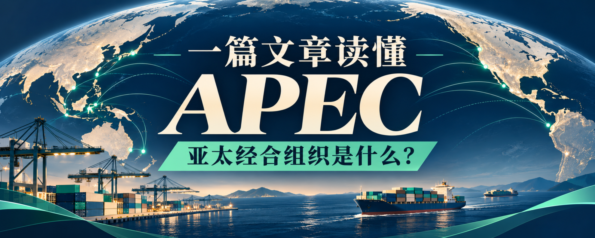
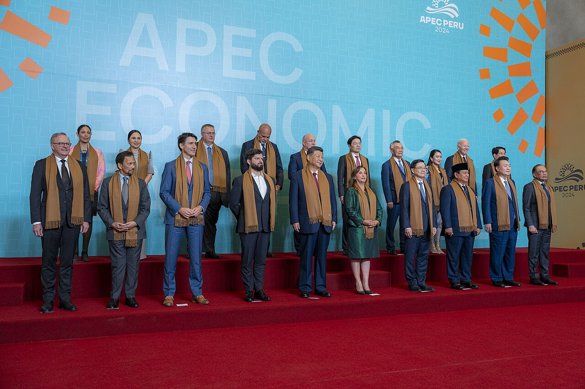
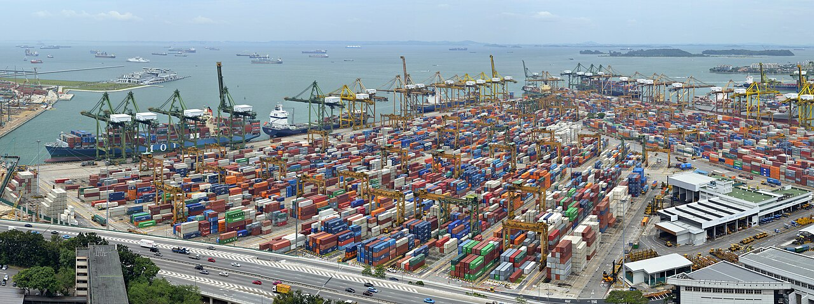

APEC 的中文名字叫亚太经合组织。你可以把它想成一张横跨太平洋的会议桌：来自亚洲、大洋洲和美洲的 21 个经济体，围着贸易、投资、科技和人员往来这些事，年复一年地商量。
2026 年 11 月 18 日至 19 日，APEC 领导人非正式会议在深圳举行。随着会议召开，关于它的新闻越来越多。
不过，对大多数人来说，“APEC”这四个字母还是有点陌生。每年看到领导人聚在一起，听到各种会议声明，难免会好奇：这个组织是怎么来的？它平时做什么？开完会之后，真的会影响我们的生活吗？
把这几个问题弄清楚，APEC 其实并不难懂。

2024 年 APEC 领导人在秘鲁利马举行会议时的合影。图片为历史资料，来源：The White House / Wikimedia Commons，美国联邦政府作品，公共领域。查看原图

一、APEC 是怎么来的？
先把名字说清楚。APEC 是 Asia-Pacific Economic Cooperation 的缩写，中文通常称为亚太经合组织。它是一个关注亚太地区经济合作的论坛。
时间回到 1989 年。当时，太平洋两岸的经济联系越来越紧密：商品、资金和企业活动不断跨越边界，彼此做生意的机会多了，需要协调的问题也多了。
那一年，时任澳大利亚总理霍克提出建立亚太经济合作机制。同年 11 月，来自 12 个经济体的部长在澳大利亚堪培拉会面，APEC 由此成立。
一开始，参加会议的主要是部长和官员。到了 1993 年，APEC 开始举行领导人非正式会议。此后，除了领导人会议，各成员的官员、企业界代表和专家也会在一年中的不同时间，就贸易、投资和其他议题持续交流。
成员数量也慢慢增加，从最初的 12 个发展到现在的 21 个。1998 年，秘鲁、俄罗斯和越南加入后，形成了今天的成员名单。
二、21 个成员都有谁？
APEC 的成员遍布太平洋两岸，包括亚洲、大洋洲和美洲的一些重要经济体。
完整名单是：澳大利亚、文莱、加拿大、智利、中国、中国香港、印度尼西亚、日本、韩国、马来西亚、墨西哥、新西兰、巴布亚新几内亚、秘鲁、菲律宾、俄罗斯、新加坡、中国台北、泰国、美国和越南。
这些成员的情况差别很大。有的制造业发达，有的拥有丰富的矿产和能源，有的在金融、航运或者农业方面有自己的优势。各自擅长的领域不同，彼此之间也就有了大量买卖和合作。
拿一部手机来说，芯片、屏幕和其他零件可能来自不同地方，产品经过组装后，再通过港口和航线卖到多个市场。从原料到成品，它的旅程往往会跨过好几次边界。
货物过境时要报关、检验、运输和付款。每个地方的程序、标准和规定，都会影响企业花多少时间、付多少成本。APEC 讨论的许多事情，就和这些环节有关。
三、为什么这场会议受到关注？
因为这些经济体加在一起，覆盖了世界经济中很大一部分。
APEC 统计平台的数据显示，2025 年，21 个成员经济体合计约有 30 亿人口，占世界人口的 36.4%；按照该平台的实际 GDP 口径，经济总量约占世界的 61.6%；货物出口额约占世界的 50.1%。
换句话说，全球出口的货物里，大约有一半按金额计算来自 APEC 成员经济体。
数字背后是密集的往来：原材料、零部件、农产品和消费品不断从一个港口运往另一个港口；企业在不同市场寻找客户和供应商；工作人员也会为了参展、谈生意或考察项目跨境出行。
因此，当成员讨论通关、供应链和投资环境时，受到影响的可能是港口里的货物、企业的订单，以及与这些行业相关的工作。影响有多大，要看最终政策、市场需求和企业自身情况。
数据来源：StatsAPEC，人口、实际 GDP 和货物出口均为 2025 年数据

新加坡吉宝集装箱码头历史照片。摄影：Noel Reynolds，图片经 Wikimedia Commons 缩放；查看原图；CC BY 2.0。

四、APEC 平时都在做什么？
领导人的合影通常最容易出现在新闻里。镜头之外，APEC 还有不少持续一整年的工作。
贸易官员会讨论如何让货物通关更方便；企业代表会提出做生意时碰到的问题；专家和工作组则会研究数字贸易、能源、食品安全、技能培训等具体议题。
这些听起来有点抽象。我们来看一项已经运行多年的安排：APEC 商务旅行卡。
假设一位来自充分参与该计划的经济体、符合申请条件的商务人士，经常要到几个成员经济体见客户。申请商务旅行卡时，申请材料会经过有关方面审核。对于已经给予预先入境许可、并充分参与该计划的目的地，持卡人进行符合规定的短期商务访问时，可以省去另行申请签证或入境许可的步骤；在参与机场，还可以使用快速通道。
这项计划从 1997 年试行。APEC 在 2025 年发布的评估报告称，21 个成员经济体合计已有超过 46 万名持卡人。
当然，卡上的便利有具体范围：目的地需要事先给予许可，旅行时仍要携带有效护照；美国和加拿大属于该计划的过渡成员，前往这两个地方仍须按要求准备签证等入境文件。具体要求也应以出发前各地公布的规定为准。
这张卡解决不了所有出行问题，却能让符合条件、经常往返的商务人士少办一些手续。类似这样围绕具体流程做的合作，是理解 APEC 的一个好入口。
另一项正在推进的工作是无纸化贸易。一批货从卖家运到买家手中，往往伴随着发票、提单和各种证明。如果不同地方的电子文件格式能够更好地衔接，企业处理单据可能更方便。
这项工作仍需要各方协调法律、标准和系统。APEC 在 2026 年的会议中讨论了电子提单等合作；至于具体能推广到什么程度，还要看后续落实。
资料来源：APEC 商务旅行卡说明、2025 年商务旅行卡评估报告、2026 年高级官员会议消息
五、商量好的事情，大家都要照着做吗？
APEC 讨论问题时，强调协商一致。成员要先找到共同能够接受的方向，再通过声明、工作计划和合作项目等方式往前推进。
成员作出的承诺通常基于自愿。不同经济体的产业、发展水平和政策环境各不相同，即使认可同一个方向，具体怎么做、什么时候做，也可能有差别。
这让不同立场的成员有机会继续交流，但碰到分歧大的问题，谈起来也会很费劲。
2018 年，APEC 会议在巴布亚新几内亚举行。当时，成员在贸易等问题上存在分歧，领导人最终未能就联合公报达成一致，东道主后来发表了主席声明。
这个例子说明，成员之间有紧密的经济联系，也有各自需要维护的利益。会议能让大家交换意见，但一场会议能谈到什么程度，取决于各方当时愿意达成多少共识。
资料来源：APEC 运作方式、路透社关于 2018 年会议的报道
六、它和普通人的生活有什么关系？
对大多数人来说，APEC 的影响往往是间接的。我们未必会用到商务旅行卡，也不会每天研究港口里的文件，但很多工作和消费都与跨境贸易有关。
比如，一家小企业从海外采购零件，再把成品卖给其他市场。通关需要多久、运输费用高不高、供应能否按时到达，都关系到企业能否接下订单。订单多或少，又可能影响工厂的生产安排和岗位需求。
再比如，我们在商店或网上看到的进口食品、电子产品，背后都涉及运输、贸易规则和市场竞争。商品最终卖多少钱，还受到汇率、需求、原材料价格等多种因素影响。
APEC 的讨论是其中的一环。它能为成员提供交流和合作的机会；一项倡议能否让企业或消费者感受到变化，还要看各地后来采取了什么措施。
七、2026 年深圳会议谈了什么？
2026 年 11 月 18 日至 19 日，APEC 领导人非正式会议在深圳举行。贸易、互联互通、数字经济和创新是会议关注的议题。
会议通过了《2026 年 APEC 领导人宣言》，提出建设亚太共同体的深圳展望，并形成贸易、互联互通和创新方面的成果文件。宣言也提到数字经济、人工智能和中小企业等议题。
这些文件为接下来的合作提出方向，具体措施能否落地、企业和普通人能否感受到变化，还要看成员经济体之后的行动。
本文最初写于 2026 年 11 月 16 日，深圳会议信息于 11 月 19 日更新。
资料来源：2026 年 APEC 领导人宣言、中国外交部关于会议的介绍

工作人员从设备中取出半导体晶圆，为资料图。来源：Purdue Engineering 视频截图，经 Wikimedia Commons 缩放；查看原图；CC BY 4.0。

八、新闻里的“亚太自贸区”又是什么？
看 APEC 的新闻时，有时还会遇到另一个缩写：FTAAP，中文叫“亚太自由贸易区”。
这是亚太经济一体化的一个长期构想。APEC 成员围绕它开展研究、交流政策经验，也讨论如何提升参与区域贸易合作的能力。
它已经讨论了很多年。2004 年，APEC 工商咨询理事会提出相关建议；2006 年，APEC 成员同意研究这一构想的长期前景；2014 年，领导人通过了推进该构想的北京路线图。
截至本文写作时，FTAAP 仍在长期推进和讨论中。关于具体规则、参与方式和后续安排，还需要成员继续协商。
资料来源：APEC 关于 FTAAP 的历程研究、2014 年北京路线图
深圳会议提出的合作方向能取得哪些具体进展，还需要看后续行动。